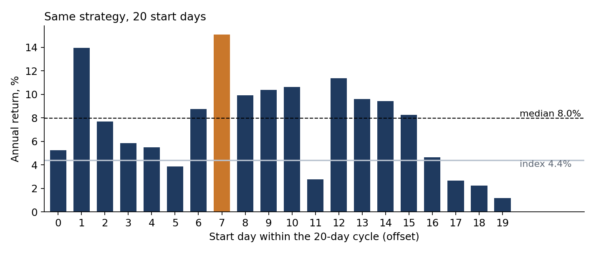
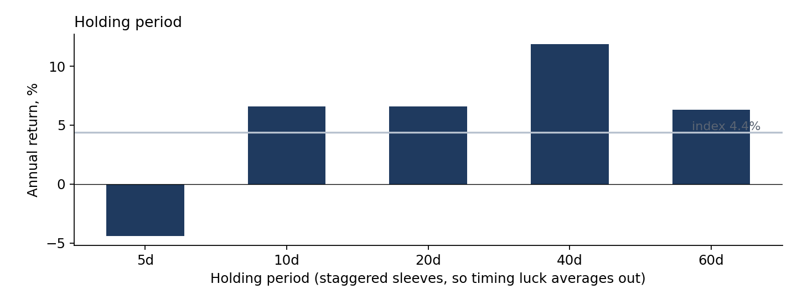

How much of a backtest is the calendar?
My LightGBM stock-ranking strategy rebalanced every 20 trading days and showed a strong backtest. On JoinQuant it looked much weaker. One suspect was the rebalance schedule. A 20-day cycle can start on any of 20 days, and nothing about the model says which one is right.
A. Timing luck
I ran the identical strategy (same model, same features, same costs) 20 times, once for each possible start day of the cycle, over the same window (2019-11 to 2025-12).

| Ann. return | Sharpe | Max drawdown | |
|---|---|---|---|
| Worst start day | 1.2% | 0.17 | -68.2% |
| Median | 8.0% | 0.45 | -48.1% |
| Best start day | 15.1% | 0.72 | -34.1% |
| CSI All Share index | 4.4% | 0.31 | -39.3% |
A second source of noise showed up along the way. Early runs were not bit-for-bit reproducible: the stock universe was stored in a Python set, so the order of training rows, and with it LightGBM's bagging samples, changed from run to run. That alone moved a single schedule's annual return by a median of 4 percentage points, and by up to 7. Sorting the universe fixed it, and two runs now match exactly. Across all runs the original schedule stayed in the top quartile.
B. How fast does the signal decay?
| Horizon (trading days) | 1 | 5 | 10 | 20 | 40 | 60 |
|---|---|---|---|---|---|---|
| Mean Rank IC | 0.022 | 0.024 | 0.023 | 0.037 | 0.042 | 0.049 |
IC keeps rising out to 60 days, so the signal is slow. Short holding periods pay full trading costs without collecting much of the signal.
C. Holding period
Each holding period is run as equal-capital staggered sleeves, so timing luck averages out (2020-01 to 2025-12).

| Portfolio | Ann. return | Sharpe | Max drawdown |
|---|---|---|---|
| Hold 5 days, staggered | -4.4% | -0.11 | -49.6% |
| Hold 20 days, 20 staggered sleeves | 6.6% | 0.42 | -42.2% |
| Hold 40 days, staggered | 11.9% | 0.65 | -35.3% |
| Hold 20 days, one schedule (offset 0) | 4.1% | 0.29 | -48.8% |
40 days came out best in every run, which fits the slow IC decay. But it rests on four sleeves and one six-year sample, so I treat it as a lead to test out of sample, not a setting to adopt.
D. Let the signal decide when to trade?
Instead of a calendar, score every day and sell a holding only when it falls below rank S, refilling with the best stock not held. One model, retrained every 20 days, scores each day's factors.
| Sell when rank falls below | 30 | 60 | 100 | 200 |
|---|---|---|---|---|
| Annual return | -11.3% | -4.0% | -0.5% | 0.7% |
| Round trips per slot per year | 59 | 37 | 27 | 17 |
Every version lost to the calendar strategy. Daily score changes are mostly noise, so trading on them turns the book over every few days and pays the costs each time.
E. Constrain beta?
The top-20 portfolio is long only with a beta of about 0.85, so most of its risk is the market's. Keeping the same model and changing only the weights, with settings fixed before the run (the model's 100 best-scored stocks, 250-day beta, 5% cap per stock), all 20 start days combined:
| Portfolio | Ann. return | Sharpe | Max DD |
|---|---|---|---|
| Equal weight top 20 | 7.8% | 0.47 | -42.3% |
| Max score, beta ≤ 0.7 | 6.6% | 0.46 | -30.7% |
| Min beta within the model's top 100 | 11.3% | 0.75 | -15.4% |
| Control: min beta, whole universe, no model | 10.6% | 0.74 | -16.3% |
| CSI All Share index | 5.5% | 0.37 | -39.3% |
The beta cap cut the drawdown by 11 points but left the Sharpe ratio unchanged. Minimizing beta raised it to 0.75, but the control that ignores the model does just as well. The gain is the low-beta anomaly, not my stock selection.
Takeaways
- Report the distribution over start days, not one backtest. A single schedule can be off by several points in either direction.
- Staggered sleeves are the free fix. They add no parameters, are easy to run live, and make drawdowns less dependent on the calendar.
- Make the pipeline reproducible before reading anything into small differences. Unordered sets were enough to move results by several points.
- Trading more often is not smarter timing. With a slow signal, it mostly adds cost.
- Give every improvement a control. A better Sharpe ratio after an optimization can come from a known anomaly rather than the model.
Historical backtest on free BaoStock / AkShare data, net of 0.03% commission and 0.1% stamp duty. Not investment advice.